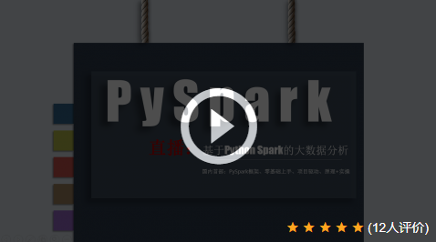

是一套系统且具有很强实战性的Spark课程，通俗易懂，由浅入深，基于企业项目环境，深度剖析和讲解Spark。本课程涵盖了Spark Core、Spark SQL、Spark Streaming、Spark Mllib以及Spark运维与监控、Spark相关项目等所有Spark核心内容，最后以企业级项目案例来详细讲解Spark并带领大家完成从理论到实战的进阶！

链接详情：http://www.xuetuwuyou.com/course/173
1. 课程介绍
1、基于知名手机厂商线上项目需求进行讲解，快速提升Spark项目经验，解决手机应用实时分析、实时查询需求。
2、涵盖大数据实时计算一体化的处理流程，包括Flume采集不同来源不同类型的日志（用户行为日志，Nginx日志等等），Kafka消息队列缓存数据并提供高并发的处理以及供后续多种系统消费数据，spark-streaming根据业务需求实时计算数据，Hbase用来存储大数据量和低延迟的访问。
3、特别注重企业级Spark项目开发的系统性、完整性，拒绝小demo小案例，提升视野与高度。
2. 课程视频及源码获取联系方式
收集整理了人工智能和大数据方面的项目实战类的视频教程，需要视频请加微信（BigDataAI007） 如本站没有您想要的视频，请微信联系，可以帮您拿到课程。

2.1 项目总体介绍和背景
项目总体介绍和背景
课程内容：
一、pyspark环境篇
①python2.7+pycharm环境配置
②anaconda环境配置
③python数据结构及函数使用
④Spark2.x环境配置
2、pyspark基础篇
①配置pyspark模块到pycharm
②基于pyspark编程实现wordcount（词频统计）
③spark-submit提交spark application
④案例：基于pyspark电商网站数据分析
⑤深入理解pyspark内部工作原理
3、pyspark进阶篇
①基于pyspark的sparksql编程（sql和dsl）
②案例：淘宝用户数据分析（集成hive使用）
③如何定义、注册和使用udf
④基于pyspark的sparkstreaming实时计算
⑤案例：实时销售额统计和商品点击趋势分析
4、pyspark项目篇
①实战项目：美国宇航局肯尼迪航天中心web日志
②数据统计：数据总览、http响应状态相关统计分析、客户端相关访问统计分析、uri访问相关统计分析
5、bigdata实战篇
①使用hbase的pyton api访问数据
②实战：爬取电子商务网站的图片和商品信息
③python的爬虫（beautifulsoap和mechnize）
④数据存储hbase表及分析
课程目录：
课程一：PySpark课程及环境准备
0101-为什么要学习PySpark编程
0102-ySpark编程的内容大纲
0103-Python介绍、Windows下2.7的安装及测试
0104-PyCharm安装、设置及创建工程和测试
0105-PySpark第三方包的安装配置
0106-基于Python的SparkCore编程模板
0107-解决Windows下开发HDFS相关警告
0108-并行化本地集合创建RDD及RDD初步使用
0109-Python中函数的定义及匿名函数lambda使用
0110-PySpark实现WordCount程序及测试
课程二：PySpark环境准备（二）
0201-回顾上次课程的内容及本次课程提纲
0202-PySpark实现从HDFS读取数据实现WordCount（属性配置）
0203-深入WordCount程序之SortByKey
0204-深入WordCount程序之Top
0205-Anaconda2版本、安装、配置、使用及测试（针对pyspark编程）
0206-Spark自带交互式pyspark命令的使用
0207-pyspark底层架构及如何提交pyspark程序运行
课程三：PySpark基础篇
0301-Linux下源码编译安装Python及测试pyspark程序
0302-快速掌握SparkStandalone及HistoryServer配置与功能使用
0303-运行Python脚本在SparkStandalone集群模式下
0304-案例分析：需求分析及读取数据、过滤清洗转换数据
课程四：PySpark进阶篇（一）
0401-案例分析：浏览量PV和访客数UV分析实现
0402-案例分析：熟悉RDD中其他API函数的使用
0403-PySpark基础使用回顾总结
0404-淘宝数据分析：Python的SparkSQL编程及RDD转换为DataFrame
0405-淘宝数据分析：Python的DataFrame的SQL和DSL数据分析
课程五：PySpark进阶篇（二）
0501-Linux系统配置pyspark及安装PyCharm的配置
0502-pyspark编程SparkSQL从Hive表和MySQL表读取数据及JOIN分析
0503-pyspark中SparkSQL定义函数及在SQL与DSL中使用
0504-基于Python的SparkStreaming从Network读取数据处理
课程六：PySpark项目篇（一）
0601-基于Python的SparkStreaming开发注意事项及自定义输出函数、企业的使用说明
0602-项目实战：数据调研和开发流程
0603-项目实战：pSparkSQL数据读取、数据解析（正则表达式函数）和数据初步清洗
课程七：PySpark项目篇（二）
0701-项目实战：数据清洗过滤（SparkSQL函数使用）
0702-项目实战：数据转换（日期类型数据处理，自定义UDF使用）
0703-高级应用：基于Python语言访问HBase表的数据（Thrift模块及环境配置）
课程八：PySpark项目篇（三）
0801-项目实战：依据需求数据分析编程测试（一）
0802-项目实战：依据需求数据分析编程测试（二）
0803-项目实战：依据需求数据分析编程测试（三）及高级知识扩展